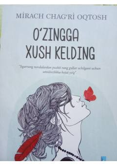

OXO'zingni sev, o'zingga qayt — ichki tinchlik sari qo'llanma.
Bu kitob dunyo tashvishlaridan charchagan, bir zum tin olishni va o'zini yaxshi his qilishni istagan odamlar uchun yozilgan. Muallif o'quvchini o'ziga e'tibor qaratishga, o'zini yetarli va to'liq his qilishga undaydi. Har kuni amaliy maslahatlar orqali o'z-o'zini qabul qilish va ichki tinchlikka erishish yo'li ko'rsatiladi.